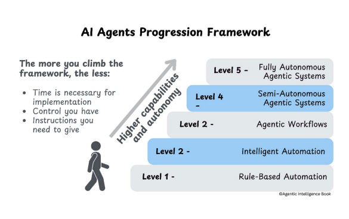

AI Agent Autonomy
Understanding the Spectrum of Intelligence
What is AI Agent Autonomy?
Autonomy refers to an AI agent’s ability to:
- Act independently without constant human intervention
- Make decisions based on environmental feedback
- Adapt strategies to achieve goals
- Learn and improve from experience
The more autonomous an agent, the less human oversight it requires.
The SPAR Framework
How AI Agents Operate
SPAR Overview
How AI Agents Take Action:
The SPAR cycle enables agents to operate autonomously by continuously sensing, planning, acting, and reflecting.
Sense
Gathering Information
- Gather data from multiple sources
- Detect changes in the environment
- Maintain context awareness
- Process inputs from various modalities
Plan
Strategic Thinking
- Engage in sophisticated reasoning to develop strategies
- Create step-by-step plans for goal achievement
- Coordinate resources effectively
- Adapt to constraints and opportunities
Act
Execution Phase
- Use available tools to carry out planned actions
- Send messages and communicate with systems
- Update systems and databases
- Execute complex workflows
Reflect
Learning and Improvement
- Learn and adapt from experience
- Analyze performance metrics
- Refine approaches for future tasks
- Build knowledge from outcomes
The Autonomy Framework
Six Levels of AI Independence
The Autonomy Pyramid

Higher levels = Greater autonomy
Autonomy as Design Choice
Designing AI systems requires intentional decisions about autonomy level:
Business Considerations:
- Risk tolerance and safety requirements
- Regulatory compliance needs
- User trust and acceptance
Technical Constraints:
- Available data and compute resources
- System complexity requirements
- Integration capabilities
Level 0: Manual Operations
Human-Only Control
Level 0: Overview
Manual Operations
AI Agent Analogy: A basic calculator - requires human input for every operation
Key Characteristics:
- Humans perform all tasks without automation
- Basic digital tools (spreadsheets, email)
- Manual processing only
Level 0: SPAR Analysis
Not Applicable
SPAR Capabilities: Not Applicable
- No automated sensing, planning, acting, or reflecting
- All cognitive work performed by humans
- Digital tools serve only as passive instruments
Level 1: Rule-Based Automation
Simple Automation
Level 1: Overview
Rule-Based Automation
AI Agent Analogy: A chatbot with predefined responses - follows scripts but can’t adapt
Key Characteristics:
- Simple automation follows fixed rules
- Basic automation tools (RPA, simple scripts)
- Predefined triggers and structured data
Level 1: SPAR Analysis
Basic Automation Cycle
SPAR Capabilities:
- Sensing: Predefined triggers and simple data inputs
- Planning: Simple if-then rules and decision trees
- Acting: Deterministic actions with fixed responses
- Reflecting: Basic logging only, no learning
Level 2: Intelligent Process Automation
Smart Automation
Level 2: Overview
Intelligent Process Automation
AI Agent Analogy: A smart email assistant - can categorize emails and suggest responses but needs approval
Key Characteristics:
- AI combines automation with cognitive abilities
- Machine learning, NLP, computer vision, RPA
- Semi-structured data from multiple sources
Level 2: SPAR Analysis
Enhanced Processing
SPAR Capabilities:
- Sensing: Multi-source data processing and pattern recognition
- Planning: Basic AI models for classification and prediction
- Acting: Sophisticated actions with error handling
- Reflecting: Performance monitoring, no adaptation
Level 3: Agentic Workflows
Reasoning Agents
Level 3: Overview
Agentic Workflows
AI Agent Analogy: A research assistant - can gather information, analyze data, and create reports but needs guidance on complex decisions
Key Characteristics:
- Agents generate content, plan, reason, and adapt
- Large language models, memory systems, content generation
- Advanced natural language understanding
Level 3: SPAR Analysis
Intelligent Reasoning
SPAR Capabilities:
- Sensing: Advanced NLU and context awareness
- Planning: Foundation model reasoning and workflow orchestration
- Acting: Chaining tools and multi-step task execution
- Reflecting: Limited short-term feedback and long-term memory
Level 4: Semi-Autonomous Agents
Strategic Independence
Level 4: Overview
Semi-Autonomous Agents
AI Agent Analogy: A specialized AI consultant - operates independently in its domain of expertise, adapting strategies based on outcomes
Key Characteristics:
- Agents work autonomously within defined expertise
- Advanced reasoning, real-time adaptation, causal reasoning
- Multi-modal perception of diverse inputs
Level 4: SPAR Analysis
Advanced Autonomy
SPAR Capabilities:
- Sensing: Multi-modal perception and interpretation
- Planning: Dynamic strategies for complex, evolving tasks
- Acting: Autonomous tool usage and intelligent error recovery
- Reflecting: Context retention across sessions, learns from experience
Level 5: Fully Autonomous Agents
Complete Independence
Level 5: Overview
Fully Autonomous Agents
AI Agent Analogy: An AI scientist - can conduct research, form hypotheses, design experiments, and discover new knowledge across any domain
Key Characteristics:
- AI systems handle any task, cross-domain learning
- Sophisticated memory systems, advanced learning mechanisms
- Complete environmental awareness
Level 5: SPAR Analysis
Complete Autonomy
SPAR Capabilities:
- Sensing: Complete environmental awareness and goal formulation
- Planning: Advanced reasoning and original problem-solving
- Acting: Full autonomy in tool selection and execution
- Reflecting: Continuous self-improvement, robust long-term memory
Key Takeaways
Implementation Insights
The Autonomy Spectrum
Key Insights:
- Higher autonomy = less human intervention required
- Higher autonomy = more complexity and more AI LLM involvement
- Higher autonomy = more hallucinations
- Design choice depends on specific use case needs
Implementation Considerations
Best Practices:
- Start with lower levels and gradually increase autonomy
- Balance capability requirements with risk management
- Consider user acceptance and regulatory constraints
- Design appropriate human oversight mechanisms
Thank You
Questions & Discussion
Understanding AI agent autonomy helps us build more effective and trustworthy AI systems